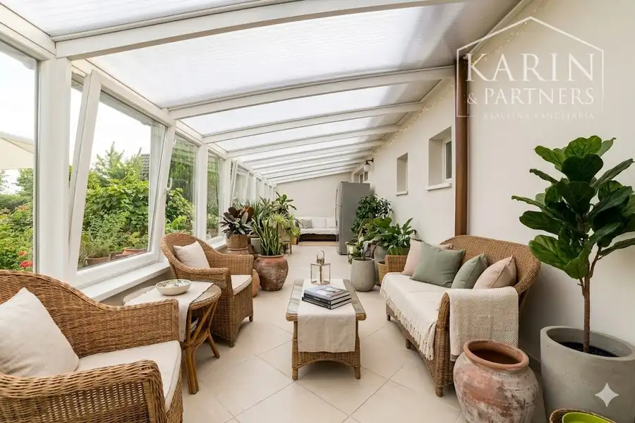
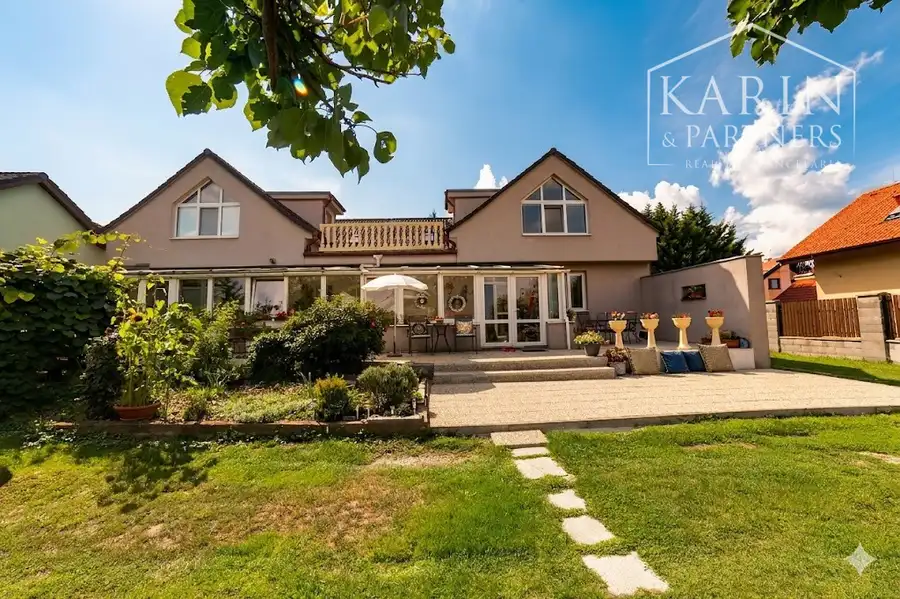
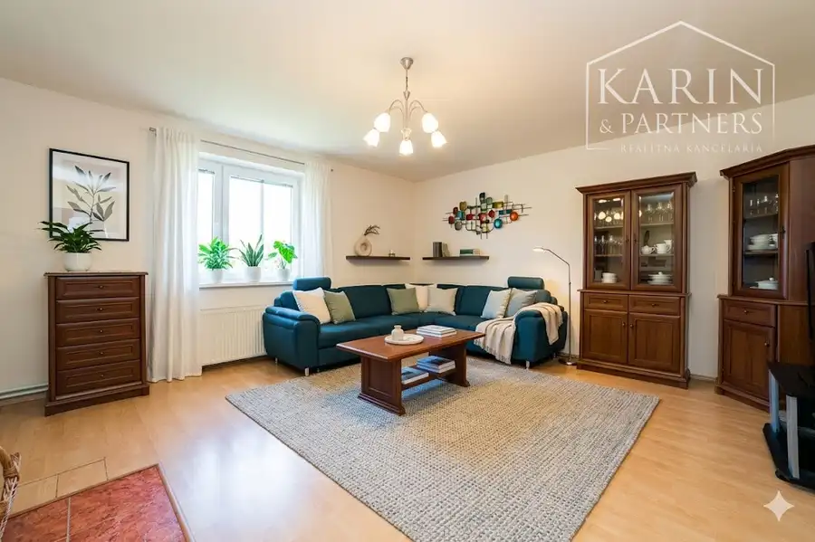
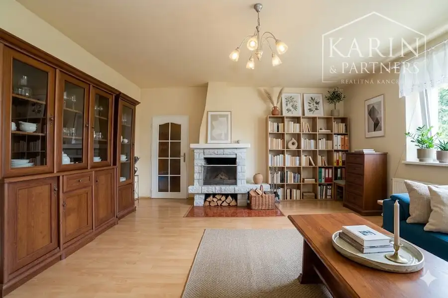
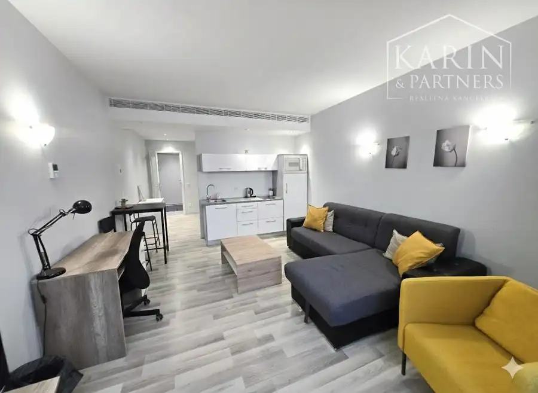

PREDAJ: Nadštandardný rodinný dom s dvomi bytovými jednotkami – Bratislava, Vajnory
Vajnory, Bratislava





- Plocha424 m²
- StavČiastočná rekonštrukcia
- VlastníctvoOsobné
O nehnuteľnosti
Realitná kancelária KARIN & PARTNERS Vám ponúka vo výhradnom zastúpení na predaj na predaj výnimočnú nehnuteľnosť v srdci obľúbenej mestskej časti Vajnory. Tento priestranný rodinný dom na pozemku s rozlohou 1 229 m² predstavuje ideálnu voľbu pre viacgeneračné bývanie, kombináciu súkromia s podnikaním, alebo ako strategickú investičnú príležitosť.,,Dom, ktorý má dve tváre. Dva domy spojené zimnou záhradou, obklopené 12-árovým pozemkom v bratislavských Vajnoroch. Chcete bývať s rodičmi, ale zachovať si súkromie? Alebo hľadáte sídlo pre svoju firmu s obrovskou záhradou? Toto je ono."LOKALITA: Pokoj a mestský komfortMestská časť Vajnory je známa svojou rodinnou atmosférou a bohatými možnosťami rekreácie.Príroda a šport: V tesnej blízkosti sa nachádza Vajnorské jazero, jazero Zlaté piesky a sieť cyklistických trás.Občianska vybavenosť: Kompletná sieť škôl, škôlok a obchodov priamo v mieste.Dostupnosť: Rýchle napojenie na diaľnicu, dostupnosť MHD a vlakové spojenie zabezpečujú komfortné dochádzanie do centra mesta.DISPOZÍCIA A VYBAVENIEObjekt pozostáva z dvoch samostatných bytových jednotiek prepojených presklenou zimnou záhradou (48 m²), čo dodáva domu unikátny charakter.Väčší dom (5 izieb): Ponúka veľkorysú dennú časť s krbom, kuchyňu, 2 kúpeľne a bohatý exteriérový priestor (terasa na poschodí + 2 terasy na prízemí).Menší dom (3 izby): Disponuje krbom v dennej miestnosti, kuchyňou, 2 kúpeľňami a vlastnou terasou.Technické prednosti:Samostatné vstupy a samostatné merače energií pre obe časti.Vykurovanie zabezpečené dvomi plynovými kotlami.Kompletné inžinierske siete (VIS) + vlastná vŕtaná studňa.Čiastočné podpivničenie a parkovanie vo dvore až pre 6 vozidiel.TECHNICKÉ PARAMETRE A POTENCIÁLÚžitková plocha: 424 m² | Zastavaná plocha: 400 m²Stav: Nadstavba a prístavba z roku 2006 (zateplenie, strecha Bramac, plastové okná).Bonus: K dispozícii je projektová dokumentácia na výstavbu 3-garáže, altánku a vonkajšieho grilu.Variabilita kúpy:Kúpa celého objektu s pozemkom 1 229 m².Možnosť kúpy menšieho domu s pozemkom 600 m².Využitie samostatnej časti pozemku (500 m²) na výstavbu nového rodinného domu.CENA A NÁKLADYMesačné náklady: cca 240 € (pre oba domy spolu)Celková cena: 730 000 EurV cene je zahrnutý kompletný právny servis, vypracovanie kúpnych zmlúv a poplatky spojené s prevodom nehnuteľnosti.KONTAKTUJTE NÁSV prípade záujmu o obhliadku alebo doplňujúce informácie (pôdorysy, technická správa) nás neváhajte kontaktovať:Kontakt: Adrianová Tel.: 0948 056 116E-mail: adrianova@karinpartners.skWeb: www.karinpartners.sk/adrianovaKarin & Partners – Váš partner vo svete nehnuteľností.
Parametre
- Druh
- Rodinný dom
- Dátum zverejnenia
- 06. 05. 2026
- Energie
- 240
- Plocha pozemku
- 1229 m²
- Plocha terasy v m2
- 30 m²
- Počet izieb / miestností
- 8
- Počet pivníc
- 1
- Stav nehnuteľnosti
- Čiastočná rekonštrukcia
- Telekomunikácie
- Internet
- Terás
- 2
- Typ
- Predaj
- Typ konštrukcie
- Tehlová
- Vlastníctvo
- Osobné
- Vybavenie
- Terasa, Pivnica
- Vykurovanie
- Ústredné
- Zariadenie
- Čiastočne zariadené
- Zastavaná plocha
- 424 m²
- Úžitková plocha
- 424 m²
Kde to je


Mohlo by Vás zaujímať
 BytNové
300 000 €Súrne hľadáme pre konkrétneho klienta 2-izbový alebo 3-izbový byt v Bratislave i, II, III
Staré Mesto, Bratislava
2-izbový60 m²
BytNové
300 000 €Súrne hľadáme pre konkrétneho klienta 2-izbový alebo 3-izbový byt v Bratislave i, II, III
Staré Mesto, Bratislava
2-izbový60 m²
 BytNové
1 050 €PRENÁJOM | Zrekonštruovaný 3-izbový byt s balkónom ( samostatné izby ) – Bratislava - Kramare.
Nové Mesto, Bratislava
3-izbový72 m²2. podlažie
BytNové
1 050 €PRENÁJOM | Zrekonštruovaný 3-izbový byt s balkónom ( samostatné izby ) – Bratislava - Kramare.
Nové Mesto, Bratislava
3-izbový72 m²2. podlažie

BytNové Cena na vyžádáníPrenájom - 2 izbový byt v komplexe Eurovea - Pribinova ul. Exkluzívne! Staré Mesto, Bratislava 2-izbový44 m²3. podlažie